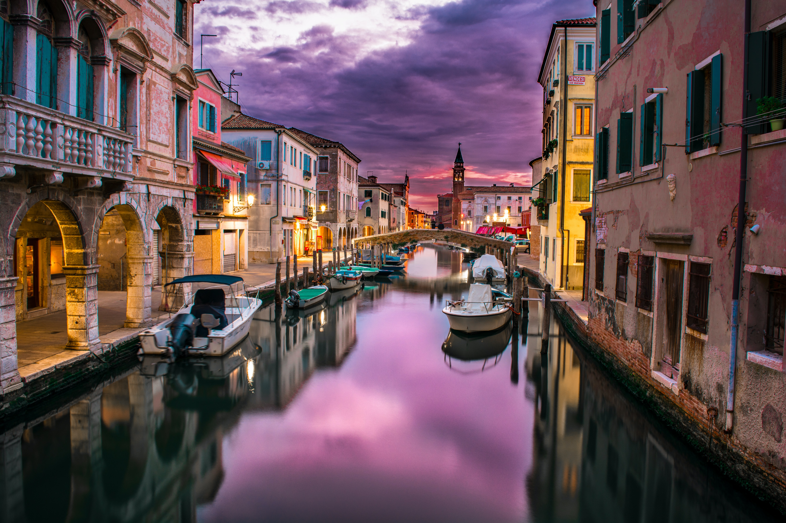

This is number one because it is truly the most enjoyable, unique Paris experience that I keep doing. While having a drink at a sidewalk cafes immensely popular in Paris, if you want a different view, consider heading to the Seine River. One of my favourite places to have a drink is on a barge which is located on the Seine near Pont de l’Archevêché. It’s had various names throughout the years, such as Le Kiosque and Un Mojito Sur Scène. Sometimes there’s recorded music and sometimes there’s a live band. I highly recommend going in the late afternoon and relax with a glass of wine or a Kir (wine + Cassis liqueur) while you gaze upon Notre Dame Cathedral.

Finally here is my story on Venice, which I traveled to during my Europe tour a year ago. 🙂 One of the city that I love most in Italy is definitely Venice. Venice is an island compo consisting of 118 small islands separating each other by canals. It is sited along Adriatic Sea in Northeast Italy. Not unexpectedly, it is also the most valuable island in Italy, as researches has revealed that Venice is sinking by 5mm each year and by the Year 2050, most parts of Venice would be underwater! In fact, many parts of the city are already sunken into water and long been vacant. When I was there last summer, St. Marco Square, the most tourists frequented landmarks in Venice, was partly flooded in the morning during high tide.
Bali is a 'must visit' destination for nature lovers and budget travellers. The province of Bali is a group of Indonesian islands, located close to the eastern tip of Java. The mere mention of Bali evokes the thought of a paradise. Bali has the most fantastical landscapes with its colourful sea shores, lush green forests, serene lakes, magnificent mountains and volcanoes, rich culture and a well-preserved heritage.